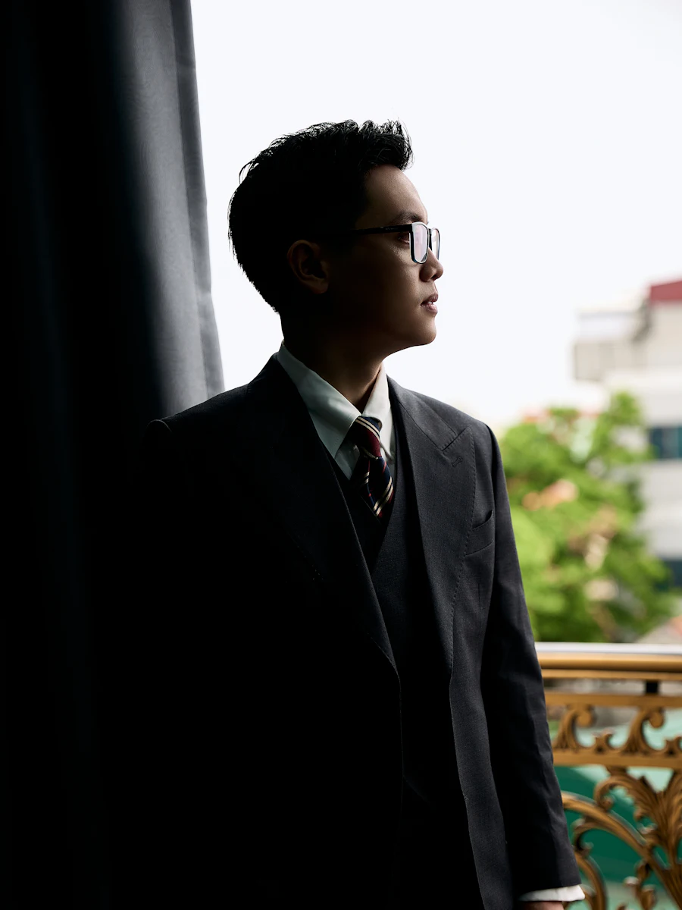

Mempelai Wanita
Dinda & Ilham
Memuat undangan

The Wedding of
Kepada Yth. Bapak/Ibu/Saudara/i
Tamu Undangan
Undangan gagal dimuat.
The Wedding of
Ombak membawa kami pada satu sama lain. Kini kami ingin Anda ada di pantai yang sama, di hari yang kami tunggu.
Sedang diputar
0:00 / 0:00
“Sejauh apa pun ombak berlari, ia selalu pulang ke pantai.”
Pepatah orang pesisir
Assalamu'alaikum Wr. Wb.
Dengan memohon rahmat dan ridho Allah SWT, kami bermaksud menyelenggarakan pernikahan putra-putri kami:
Mempelai Wanita

Mempelai Pria
Simpan Tanggalnya
Menuju hari bahagia
Acara telah berlangsung. Terima kasih atas doa dan restunya.
Kisah Kami
2020 · Gili Air
Kami satu rombongan snorkeling. Ilham kehilangan sirip, Dinda menemukannya, dan percakapan di dek kapal itu tidak pernah benar-benar berhenti.
2022 · Jarak
Dua kota, satu jadwal telepon setiap malam. Kami belajar bahwa laut tidak memisahkan, ia menghubungkan.
2026 · Lamaran
Di Pantai Sire saat matahari terbenam, sebuah kerang kecil berisi pertanyaan besar. Jawabannya: iya.
2027 · Berlabuh
Kami kembali ke pantai yang sama untuk memulai perjalanan terpanjang, dan kami ingin Anda ada di sana.
Waktu & Tempat
Galeri
Geser untuk melihat, ketuk untuk memperbesar.
Tanda Kasih
Doa restu Anda adalah hadiah terindah. Namun bila ingin memberi tanda kasih, kirimkan lewat kartu pos kecil ini.
Transfer Bank
No. Rekening
Atas Nama
Ucapan
Titipkan doa dan ucapan untuk kami. Setiap pesan akan kami simpan.
Buka undangan dari link pribadi Anda untuk mengirim ucapan.
0 Ucapan
Belum ada ucapan. Jadilah yang pertama.